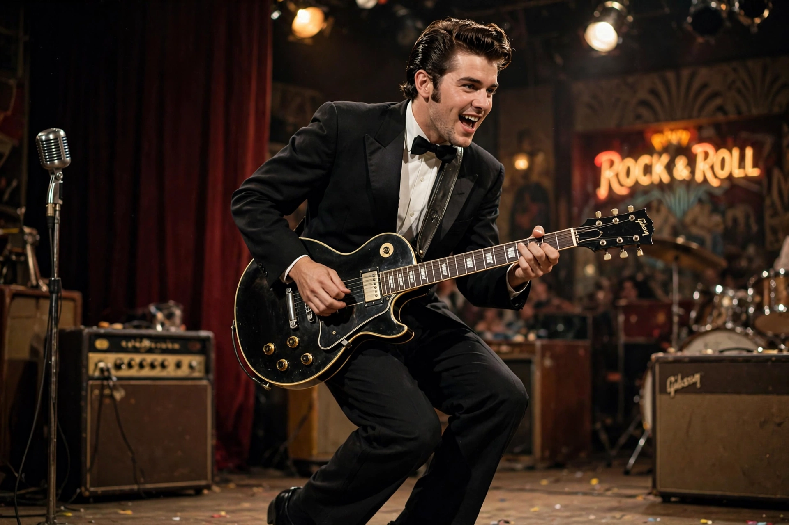

| Chuck Berry | |
|---|---|
 | |
| Born | Charles Edward Anderson Berry, October 18, 1926, St. Louis, Missouri, U.S. |
| Died | March 18, 2017 (aged 90), Wentzville, Missouri, U.S. |
| Genres | Rock and roll, rhythm and blues |
| Instruments | Guitar, vocals |
| Years active | 1953–2017 |
Charles Edward Anderson Berry (October 18, 1926 – March 18, 2017) was an American singer, guitarist and songwriter who pioneered rock and roll. Nicknamed the "Father of Rock and Roll", he refined and developed rhythm and blues into the major elements that made rock and roll distinctive, with songs such as "Maybellene" (1955), "Roll Over Beethoven" (1956), "Rock and Roll Music" (1957) and "Johnny B. Goode" (1958).
Born in St. Louis, Berry had an early interest in music and gave his first public performance while still at school. After a teenage conviction for armed robbery and reform school, he worked in automobile plants and played in local clubs, developing a guitar style influenced by T-Bone Walker and Nat King Cole's guitarist. Signed to Chess Records on the recommendation of Muddy Waters, he reworked the country fiddle tune "Ida Red" into "Maybellene", a crossover hit that reached number one on the R&B chart.
Writing lyrics aimed at the new teenage audience, and famous for his "duckwalk" stage move, Berry defined rock and roll's guitar language and subject matter — cars, school, dancing and young love. "Johnny B. Goode", with its celebrated opening guitar riff, was included on the Voyager Golden Record as a representation of Earth culture.
Berry's career was interrupted by a 1962 prison term under the Mann Act, and his later decades were marked by tax problems and tireless touring with pickup bands. He was among the first musicians inducted into the Rock and Roll Hall of Fame in 1986. The Beatles, the Rolling Stones, the Beach Boys and countless others built directly on his songbook; John Lennon remarked, "If you tried to give rock and roll another name, you might call it 'Chuck Berry'."